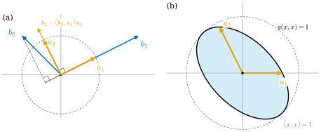

1.5 Inner Products and Gram Matrices
Goals
- inner product의 세 조건을 확인하고, 각 조건이 빠지면 무엇이 깨지는지 예로 설명할 수 있다.
- Cauchy–Schwarz inequality와 triangle inequality를 증명하고, norm·거리·각을 정의할 수 있다.
- Gram–Schmidt process로 orthonormal basis를 만들 수 있다.
- Gram matrix \((g_{ij})\)로 inner product를 계산하고, basis를 바꿀 때 \(\tilde G = B^{\mathsf{T}}GB\)로 변함을 안다.
- inner product가 벡터와 covector 사이의 자연스러운 isomorphism \(V \to V^*\)를 준다는 것과 그 성분 공식(첨자 내리기)을 안다.
Prerequisites
Motivation
Section 1.4에서 두 벡터의 성분을 곱해 더한 \(\sum_i v^i w^i\)가 basis에 따라 값이 달라진다는 것을 보았다 (Exercise 1.4.3(b)). 그런데 \(\R^2\)에서 우리는 이 식으로 길이와 각을 계산해 왔다. 이것은 standard basis라는 특별한 basis를 쓰고 있었기 때문이다. basis를 바꾸면 이 식은 더 이상 길이를 주지 않는다. vector space의 공리(덧셈과 스칼라곱)만으로는 “길이”가 정해지지 않는다는 뜻이다.
그래서 길이와 각을 재려면 vector space에 구조를 하나 더 얹어야 한다. 그것이 inner product이다. Remark 1.3.16에서 남긴 문제, 즉 “basis 없이 벡터를 covector로 바꾸려면 무엇이 필요한가”에 대한 답도 inner product이다. 미분기하에서 이 구조는 surface의 first fundamental form(Chapter 7)과 Riemannian metric(Chapter 21)으로 다시 나온다. “tangent space마다 inner product를 하나씩 준 것”이 Riemannian geometry의 출발점이다.

Inner Products
Definition 1.5.1 (inner product). vector space \(V\) 위의 inner product(내적)은 함수 \(g\colon V \times V \to \R\)로서, 모든 \(u, v, w \in V\)와 \(a, b \in \R\)에 대하여 다음을 만족하는 것이다.
- (bilinear) \(g(au + bv, w) = a\,g(u, w) + b\,g(v, w)\)이고 \(g(w, au + bv) = a\,g(w, u) + b\,g(w, v)\).
- (symmetric) \(g(v, w) = g(w, v)\).
- (positive definite) \(v \neq 0\)이면 \(g(v, v) \gt 0\).
\(g(v, w)\)를 \(\inner{v}{w}_g\)로도 쓰고, inner product가 주어진 vector space \((V, g)\)를 inner product space(내적공간)이라 한다.
symmetric이므로 bilinear 조건은 첫째 자리의 linearity만 확인하면 된다. 또 linearity에서 \(g(0, w) = g(0 \cdot 0, w) = 0\)이므로 \(g(0, 0) = 0\)이다. 따라서 positive definite 조건은 “\(g(v, v) \ge 0\)이고, 등호는 \(v = 0\)일 때만”과 같다. 이 study set에서 \(\R^n\)의 표준 inner product는 첨자 없이 \(\inner{v}{w}\)로 쓴다.
Example 1.5.2. (a) (유클리드 inner product) \(\R^n\)에서 \(\inner{v}{w} = \sum_i v^i w^i\)(standard basis에 대한 성분)은 inner product이다. bilinear와 symmetric은 식에서 바로 보이고, \(\inner{v}{v} = \sum_i (v^i)^2\)은 \(v \neq 0\)이면 양수다.
(b) \(G = \begin{pmatrix} 2 & 1 \\ 1 & 2 \end{pmatrix}\)에 대하여 \(\R^2\)에서 \(g(x, y) = x^{\mathsf{T}}Gy = 2x^1y^1 + x^1y^2 + x^2y^1 + 2x^2y^2\)는 inner product이다. bilinear는 행렬곱의 분배법칙에서, symmetric은 \(G^{\mathsf{T}} = G\)에서 나온다. positive definite는 제곱을 완성해서 확인한다: \(g(x, x) = 2(x^1)^2 + 2x^1x^2 + 2(x^2)^2 = (x^1 + x^2)^2 + (x^1)^2 + (x^2)^2\)은 \(x \neq 0\)이면 양수다. 이 inner product의 단위원이 Figure 1.5.1(b)의 타원이다.
(c) \(P_d\)에서 \(g(p, q) = \int_0^1 p(t)q(t)\,dt\)는 inner product이다. 적분의 linearity에서 bilinear이고, 분명히 symmetric이다. \(p \neq 0\)이면 \(p^2\)은 \([0, 1]\)에서 \(0\) 이상인 연속함수이고 근이 유한개뿐이므로 어떤 점 근처에서 양수다. 따라서 \(\int_0^1 p^2 \gt 0\)이다.
Non-example 1.5.3 (dropping one condition at a time). \(\R^2\) 위의 다음 함수는 inner product가 아니다.
- (a) \(\eta(v, w) = v^1w^1 - v^2w^2\): bilinear이고 symmetric이지만 \(\eta(e_2, e_2) = -1 \lt 0\)이다. 이런 “부호가 섞인” 형식은 상대성이론에서 쓰이며, positive definite 대신 비퇴화(모든 \(w\)에 대해 \(\eta(v, w) = 0\)이면 \(v = 0\)이라는 조건)만 요구하는 일반화(pseudo-Riemannian metric)의 모형이다.
- (b) \(h(v, w) = v^1w^1\): bilinear이고 symmetric이며 \(h(v, v) \ge 0\)이지만 \(h(e_2, e_2) = 0\)이다. \(e_2\)의 “길이”가 \(0\)이 되어 버린다.
- (c) \(k(v, w) = v^1w^1 + 2v^1w^2 + 2v^2w^1 + v^2w^2\): symmetric이고 \(k(e_1, e_1) = k(e_2, e_2) = 1 \gt 0\)이지만 \(k((1,-1), (1,-1)) = 1 - 2 - 2 + 1 = -2\)이다. basis vector에서 양수라고 positive definite인 것은 아니다.
- (d) \(s(v, w) = v^1w^2\): bilinear이지만 \(s(e_1, e_2) = 1 \neq 0 = s(e_2, e_1)\)이므로 symmetric이 아니다. 또 \(s(e_1, e_1) = 0\)이다.
Definition 1.5.4 (norm and orthogonality). inner product space \((V, g)\)에서 \(\abs{v}_g = \sqrt{g(v, v)}\)를 \(v\)의 norm(노름) 또는 길이라 한다. \(\abs{v}_g = 1\)이면 단위벡터라 하고, \(g(v, w) = 0\)이면 \(v\)와 \(w\)가 orthogonal(직교)한다고 한다. 유클리드 inner product의 norm은 첨자 없이 \(\abs{v}\)로 쓴다.
norm은 positive definite 덕분에 \(v \neq 0\)이면 양수이고, \(\abs{av}_g = \sqrt{a^2 g(v,v)} = \abs{a}\,\abs{v}_g\)이다. norm은 linear가 아니다(Non-example 1.2.3(c)). orthogonal은 inner product에 따라 달라진다. Figure 1.5.1(b)의 \(u_1, u_2\)는 \(g\)에 대해서는 orthogonal하지만 유클리드 inner product에 대해서는 orthogonal하지 않는다(\(\inner{u_1}{u_2} = -\tfrac{1}{2\sqrt3} \neq 0\)).
Theorem 1.5.5 (Cauchy–Schwarz inequality). inner product space \((V, g)\)의 모든 \(v, w\)에 대하여
이고, 등호는 \((v, w)\)가 linearly dependent일 때, 그리고 그때만 성립한다.
이 정리가 말하는 것. 두 벡터의 inner product의 절댓값은 두 길이의 곱을 넘지 못하고, 두 벡터가 원점을 지나는 한 직선 위에 있을 때만 그 곱과 같아진다. 그래서 둘의 비를 코사인으로 읽어 각을 정의할 수 있다(Corollary 1.5.6(c)).
Proof idea: \(v\)에서 \(w\) 방향 성분을 뺀 \(v - tw\)의 길이의 제곱은 \(0\) 이상이다. \(t\)를 가장 좋게 고르면 부등식이 된다.
Proof. \(w = 0\)이면 양변이 \(0\)이고 \((v, 0)\)은 linearly dependent이므로 성립한다. \(w \neq 0\)이라 하자. 모든 실수 \(t\)에 대하여 bilinearity와 symmetry에서 \[ 0 \le g(v - tw,\ v - tw) = g(v, v) - 2t\,g(v, w) + t^2 g(w, w) \] 이다. \(t = g(v, w)/g(w, w)\)로 두면 \[ 0 \le g(v, v) - 2\frac{g(v, w)^2}{g(w, w)} + \frac{g(v, w)^2}{g(w, w)} = \abs{v}_g^2 - \frac{g(v, w)^2}{\abs{w}_g^2} \] 이므로 \(g(v, w)^2 \le \abs{v}_g^2\abs{w}_g^2\)이고, 양변의 제곱근을 취하면 (1.5.1)이다. 등호가 성립하면 위의 \(t\)에서 \(g(v - tw, v - tw) = 0\)이므로 positive definite에 의해 \(v = tw\), 즉 linearly dependent이다. 거꾸로 \(w \neq 0\)이고 linearly dependent이면 \(v = cw\)이고 \(\abs{g(cw, w)} = \abs{c}\,\abs{w}_g^2 = \abs{v}_g\abs{w}_g\)이다.
Corollary 1.5.6 (triangle inequality, distance, angle).
- (a) \(\abs{v + w}_g \le \abs{v}_g + \abs{w}_g\)이다.
- (b) \(\R^n\)의 두 점 사이의 Euclidean distance(유클리드 거리) \(d(p, q) = \abs{q - p}\)는 \(d(p, q) \ge 0\)(등호는 \(p = q\)일 때만), \(d(p, q) = d(q, p)\), \(d(p, r) \le d(p, q) + d(q, r)\)을 만족한다.
- (c) \(v, w \neq 0\)이면 \(-1 \le \dfrac{g(v, w)}{\abs{v}_g\abs{w}_g} \le 1\)이므로 \(\cos\vartheta = \dfrac{g(v, w)}{\abs{v}_g\abs{w}_g}\)인 \(\vartheta \in [0, \pi]\)가 꼭 하나 있다. 이 \(\vartheta\)를 \(v\)와 \(w\) 사이의 각이라 한다.
Proof. (a) \(\abs{v + w}_g^2 = \abs{v}_g^2 + 2g(v, w) + \abs{w}_g^2 \le \abs{v}_g^2 + 2\abs{v}_g\abs{w}_g + \abs{w}_g^2 = (\abs{v}_g + \abs{w}_g)^2\)이다. 부등호는 Cauchy–Schwarz다. (b) 첫째는 positive definite, 둘째는 \(\abs{-u} = \abs{u}\)이다. 셋째는 (a)를 \(r - p = (q - p) + (r - q)\)에 쓴 것이다. (c) Cauchy–Schwarz에서 가운데 식의 절댓값이 \(1\) 이하이고, \(\cos\)는 \([0, \pi]\)에서 \([-1, 1]\)로 가는 bijective다.
Proposition 1.5.7 (a linear map is bounded). \(T\colon \R^n \to \R^m\)이 linear map이고 standard basis에 대한 행렬이 \(A = (A^i_j)\)이면, \(C = \big(\sum_{i,j} (A^i_j)^2\big)^{1/2}\)에 대하여 모든 \(x \in \R^n\)에서 \(\abs{Tx} \le C\abs{x}\)이다. 특히 \(\abs{Tx - Ty} \le C\abs{x - y}\)이다.
Proof. \(A\)의 \(i\)번째 행을 벡터로 본 것을 \(a_{(i)} = (A^i_1, \dots, A^i_n)\)이라 하면 (1.2.2)에서 \((Tx)^i = \sum_j A^i_j x^j = \inner{a_{(i)}}{x}\)이다. Cauchy–Schwarz에서 \(\abs{(Tx)^i} \le \abs{a_{(i)}}\,\abs{x}\)이므로 \(\abs{Tx}^2 = \sum_i \big((Tx)^i\big)^2 \le \sum_i \abs{a_{(i)}}^2 \abs{x}^2 = C^2\abs{x}^2\)이다. 둘째 부등식은 \(T\)의 linearity에서 \(Tx - Ty = T(x - y)\)이기 때문이다.
Orthonormal Bases and the Gram–Schmidt Process
Definition 1.5.8 (orthonormal). inner product space \((V, g)\)의 목록 \((u_1, \dots, u_k)\)가 \(g(u_i, u_j) = \delta_{ij}\)(\(i = j\)이면 \(1\), 아니면 \(0\))를 만족하면 orthonormal(정규직교)라 한다. basis이면서 orthonormal인 목록을 orthonormal basis라 한다.
여기서 \(\delta_{ij}\)는 Kronecker delta를 아래첨자 둘로 쓴 것이다. 첨자가 모두 아래에 있는 이유는 \(g(u_i, u_j)\)가 벡터 두 개를 받는 양이기 때문이다(뒤의 Gram matrix 참고). standard basis는 유클리드 inner product에 대한 orthonormal basis다. Example 1.3.9의 polar coordinates basis \((b_1, b_2)\)는 서로 orthogonal하지만 \(\abs{b_2} = r\)이므로 \(r \neq 1\)이면 orthonormal이 아니다. 이것이 orthonormal의 비예다.
Proposition 1.5.9 (computation in an orthonormal basis). (a) orthonormal인 목록은 linearly independent이다. (b) \((u_1, \dots, u_n)\)이 orthonormal basis이면 모든 \(v, w \in V\)에 대하여 \[ v = \sum_{i=1}^{n} g(v, u_i)\, u_i, \qquad g(v, w) = \sum_{i=1}^{n} v^i w^i, \qquad \abs{v}_g^2 = \sum_{i=1}^{n} (v^i)^2 \] 이다. 여기서 \(v^i, w^i\)는 이 basis에 대한 성분이다.
Proof. (a) \(\sum_i a^i u_i = 0\)과 \(u_j\)의 inner product를 취하면 \(0 = \sum_i a^i g(u_i, u_j) = \sum_i a^i \delta_{ij} = a^j\)이다. (b) \(v = \sum_i v^i u_i\)와 \(u_j\)의 inner product는 같은 계산으로 \(g(v, u_j) = v^j\)이다. 또 \(g(v, w) = \sum_{i,j} v^i w^j g(u_i, u_j) = \sum_i v^i w^i\)이고, \(w = v\)로 두면 셋째 식이다.
즉 orthonormal basis를 쓰면 어떤 inner product이든 성분으로는 유클리드 inner product처럼 보인다. Section 1.4의 \(\sum_i v^i w^i\)가 standard basis에서 길이를 준 것은 standard basis가 orthonormal이기 때문이었다. 다음 정리는 orthonormal basis가 언제나 있음을 보장하고, 그것을 만드는 방법까지 준다.
Theorem 1.5.10 (Gram–Schmidt process). \((V, g)\)가 \(n\)-dimensional inner product space이고 \((b_1, \dots, b_n)\)이 basis이면, 각 \(k = 1, \dots, n\)에 대하여
를 만족하는 orthonormal basis \((u_1, \dots, u_n)\)이 있다. 그것은 다음 식으로 차례로 얻는다.
특히 모든 finite-dimensional inner product space에는 orthonormal basis가 있다.
이 정리가 말하는 것. basis vector를 차례로 보면서, 앞에서 만든 방향의 성분을 빼고 길이를 \(1\)로 맞추면 orthonormal basis가 된다.
Proof idea: \(k\)에 대한 귀납법. \(w_j\)는 앞의 \(u_i\)들과 orthogonal하도록 만든 것이고, \(b_j\)가 앞의 것들의 linear combination이 아니므로 \(0\)이 아니다.
Proof. \(b_1 \neq 0\)(basis는 \(0\)을 포함하지 않는다. Example 1.1.10(d))이므로 \(u_1\)이 정의되고, \(\abs{u_1}_g = 1\), \(\Span(u_1) = \Span(b_1)\)이다. \(j \ge 2\)이고 \((u_1, \dots, u_{j-1})\)이 orthonormal이며 (1.5.2)가 \(k = j - 1\)까지 성립한다고 하자.
- \(w_j \neq 0\)이다. \(w_j = 0\)이면 \(b_j = \sum_{i \lt j} g(b_j, u_i)u_i \in \Span(u_1, \dots, u_{j-1}) = \Span(b_1, \dots, b_{j-1})\)이 되어 basis의 linearly independent에 어긋난다. 따라서 \(u_j\)가 정의되고 \(\abs{u_j}_g = 1\)이다.
- orthogonal한다. \(k \lt j\)이면 \(g(w_j, u_k) = g(b_j, u_k) - \sum_{i \lt j} g(b_j, u_i)\,\delta_{ik} = g(b_j, u_k) - g(b_j, u_k) = 0\)이므로 \(g(u_j, u_k) = 0\)이다.
- (1.5.2)가 \(k = j\)에서 성립한다. \(u_j\)는 \(b_j\)와 \(u_1, \dots, u_{j-1}\)의 linear combination이므로 \(\Span(b_1, \dots, b_j)\)에 있고, 거꾸로 \(b_j = \abs{w_j}_g u_j + \sum_{i \lt j} g(b_j, u_i)u_i\)이다. 두 subspace는 서로를 포함한다.
귀납법으로 \((u_1, \dots, u_n)\)은 orthonormal이고, Proposition 1.5.9(a)에 의해 linearly independent이며, 길이가 \(n\)이므로 basis다(Corollary 1.1.21(a)). basis는 언제나 있으므로(Theorem 1.1.18) orthonormal basis도 언제나 있다.
Example 1.5.11 (Gram–Schmidt for the running basis). 유클리드 inner product로 \(b_1 = (2,1)\), \(b_2 = (-1,1)\)에 (1.5.3)을 적용하자(Figure 1.5.1(a)). 처음 나오는 계산이므로 모든 단계를 쓴다. \(\abs{b_1} = \sqrt{4 + 1} = \sqrt5\)이므로 \(u_1 = (2, 1)/\sqrt5\)이다. 다음으로 \(\inner{b_2}{u_1} = (-2 + 1)/\sqrt5 = -1/\sqrt5\)이므로
이다. \(\abs{w_2} = \tfrac35\sqrt{1 + 4} = \tfrac{3}{\sqrt5}\)이므로 \(u_2 = w_2/\abs{w_2} = (-1, 2)/\sqrt5\)이다. 확인: \(\inner{u_1}{u_2} = (-2 + 2)/5 = 0\), \(\abs{u_2}^2 = (1 + 4)/5 = 1\).
Verification: verify/v-1-5-inner-products.py
The Gram Matrix
orthonormal이 아닌 basis에서는 inner product를 어떻게 계산하는가? basis vector끼리의 inner product \(n^2\)개만 알면 된다.
Definition 1.5.12 (Gram matrix). \((V, g)\)가 inner product space이고 \(\mathcal{B} = (b_1, \dots, b_n)\)이 basis일 때 \(g_{ij} = g(b_i, b_j)\)로 두자. \(i\)행 \(j\)열 성분이 \(g_{ij}\)인 \(n \times n\) 행렬 \(G = (g_{ij})\)를 \(\mathcal{B}\)에 대한 \(g\)의 Gram matrix(그람 행렬)이라 한다.
bilinearity에서 \(v = \sum_i v^i b_i\), \(w = \sum_j w^j b_j\)이면
이다. 첨자를 보자. 벡터를 두 개 받는 \(g\)의 성분 \(g_{ij}\)는 첨자 둘이 모두 아래에 있고, 각각이 벡터 성분의 위첨자와 짝을 이룬다(Remark 1.4.9의 균형 규칙). Section 1.4의 \(\sum_i v^i w^i\)는 균형 규칙을 어긴 식이었고, 그 자리에 들어가야 할 것이 \(g_{ij}\)였다. orthonormal basis에서만 \(g_{ij} = \delta_{ij}\)가 되어 두 식이 같아진다.
Proposition 1.5.13 (properties of the Gram matrix). \(G\)가 basis \(\mathcal{B}\)에 대한 Gram matrix라 하자.
- (a) \(G\)는 symmetric행렬이고, \(0\)이 아닌 모든 \(a \in \R^n\)에 대해 \(a^{\mathsf{T}}Ga \gt 0\)이다(positive definite 행렬).
- (b) \(G\)는 invertible이다.
- (c) \(\mathcal{B}\)에서 \(\tilde{\mathcal{B}}\)로의 change-of-basis matrix가 \(B\)이면 새 Gram matrix는 \(\tilde G = B^{\mathsf{T}}GB\)이다. 성분으로는 \(\tilde g_{kl} = \sum_{i,j} B^i_k B^j_l\, g_{ij}\)이다.
- (d) \(\mathcal{B}\)가 orthonormal basis일 필요충분조건은 \(G = I\)이다.
Proof. (a) \(g_{ij} = g(b_i, b_j) = g(b_j, b_i) = g_{ji}\)이다. \(a \neq 0\)이면 \(v = \sum_i a^i b_i \neq 0\)이고 (1.5.5)에서 \(a^{\mathsf{T}}Ga = g(v, v) \gt 0\)이다. (b) \(Ga = 0\)이면 \(a^{\mathsf{T}}Ga = 0\)이므로 (a)에 의해 \(a = 0\)이다. 따라서 \(x \mapsto Gx\)는 injective이고, Corollary 1.2.10(a)에 의해 bijective, 즉 \(G\)는 invertible이다. (c) (1.4.1)과 bilinearity에서 \(\tilde g_{kl} = g(\tilde b_k, \tilde b_l) = g\big(\sum_i B^i_k b_i,\ \sum_j B^j_l b_j\big) = \sum_{i,j} B^i_k B^j_l\, g_{ij}\)이고, 이것은 \((B^{\mathsf{T}}GB)_{kl}\)이다. (d)는 Definition 1.5.8을 다시 쓴 것이다.
(c)에서 아래첨자 하나마다 \(B\)가 하나씩 붙는다. covector의 성분 \(\omega_i\)(covariant, Theorem 1.4.6)와 같은 규칙이다. 그래서 Gram matrix는 “covariant 첨자가 둘인 양”이다. 이것이 (1.5.5)의 \(\sum g_{ij}v^iw^j\)가 basis에 무관한 이유다. 위첨자마다 \(B^{-1}\), 아래첨자마다 \(B\)가 붙어 모두 상쇄된다.
Example 1.5.14 (Gram matrices of the running basis and the polar coordinates basis). (a) 유클리드 inner product의 기준 basis \(\mathcal{B}\)에 대한 Gram matrix는 \[ \begin{aligned} g_{11} &= \inner{b_1}{b_1} = 4 + 1 = 5, \qquad g_{22} = \inner{b_2}{b_2} = 1 + 1 = 2, \\ g_{12} &= g_{21} = \inner{b_1}{b_2} = -2 + 1 = -1 \end{aligned} \] 에서 \(G = \begin{pmatrix} 5 & -1 \\ -1 & 2 \end{pmatrix}\)이다. standard basis의 Gram matrix가 \(I\)이므로 Proposition 1.5.13(c)에서도 \(G = B^{\mathsf{T}}IB = B^{\mathsf{T}}B\)이다(곱해서 확인해 보자). \(v = (1, 2) = b_1 + b_2\)이면 (1.5.5)에서 \(\abs{v}^2 = 5 \cdot 1 \cdot 1 + (-1) \cdot 1 \cdot 1 + (-1) \cdot 1 \cdot 1 + 2 \cdot 1 \cdot 1 = 5\)이고, 실제로 \(1^2 + 2^2 = 5\)이다. \(\mathcal{B}\)-성분의 제곱합 \(1^2 + 1^2 = 2\)는 길이의 제곱이 아니다.
(b) Example 1.3.9의 polar coordinates basis \(b_1 = (\cos\theta, \sin\theta)\), \(b_2 = (-r\sin\theta, r\cos\theta)\)에서는 \(g_{11} = \cos^2\theta + \sin^2\theta = 1\), \(g_{12} = -r\sin\theta\cos\theta + r\sin\theta\cos\theta = 0\), \(g_{22} = r^2\sin^2\theta + r^2\cos^2\theta = r^2\)이므로
이다(\(v^1, v^2\)는 polar coordinates basis에 대한 성분). 각이 \(\theta\)에서 \(\theta + \Delta\theta\)로 변할 때 반지름 \(r\)인 원 위에서 움직인 거리가 대략 \(r\Delta\theta\)라는 사실이 \(g_{22} = r^2\)에 담겨 있다.
Verification: verify/v-1-5-inner-products.py
The Isomorphism \(V \cong V^*\) from an Inner Product
inner product가 있으면 벡터 \(v\)에서 covector “\(v\)와 inner product하기” \(w \mapsto g(v, w)\)를 만들 수 있다. basis는 쓰지 않는다.
Proposition 1.5.15 (isomorphism given by an inner product). \((V, g)\)가 finite-dimensional inner product space일 때 \(\hat g\colon V \to V^*\)를 \(\hat g(v)(w) = g(v, w)\)로 정의하면 \(\hat g\)는 isomorphism이다. 특히 모든 \(\omega \in V^*\)에 대해 \(\omega = g(v_\omega, \cdot\,)\)인 \(v_\omega \in V\)가 꼭 하나 있다. basis \(\mathcal{B}\)의 Gram matrix를 \(G = (g_{ij})\), 그 inverse matrix를 \(G^{-1} = (g^{ij})\)로 쓰면
이다. 여기서 \((\beta^i)\)는 \(\mathcal{B}\)의 dual basis다.
이 명제가 말하는 것. inner product가 있으면 벡터와 covector를 서로 바꿀 수 있다. 성분으로는 벡터의 위첨자를 \(g_{ij}\)로 “내리고”, covector의 아래첨자를 \(g^{ij}\)로 “올린다”.
Proof. \(\hat g(v)\)는 \(w\)에 대해 linear이므로 \(V^*\)의 원소이고, \(\hat g\)는 \(v\)에 대해 linear이다(bilinearity). \(\hat g(v) = 0\)이면 특히 \(0 = \hat g(v)(v) = \abs{v}_g^2\)이므로 \(v = 0\)이다. \(\dim V^* = \dim V\)(Theorem 1.3.5)이므로 Corollary 1.2.10(a)에 의해 \(\hat g\)는 isomorphism이고, \(v_\omega = \hat g^{-1}(\omega)\)이다. 성분을 구하자. Theorem 1.3.5에 의해 \(\hat g(v)\)의 \(i\)번째 성분은 \(\hat g(v)(b_i) = g(v, b_i) = \sum_j v^j g(b_j, b_i) = \sum_j g_{ij} v^j\)이다(symmetry). \(v_\omega\)는 \(\omega_i = \sum_j g_{ij} (v_\omega)^j\), 즉 \([\omega]^{\mathsf{T}} = G[v_\omega]\)를 풀어 얻으므로 \([v_\omega] = G^{-1}[\omega]^{\mathsf{T}}\)이고, 이것이 둘째 식이다.
\(G^{-1}\)의 성분을 위첨자 둘로 \(g^{ij}\)라 쓰는 것은 균형 규칙과 맞는다: \(\sum_j g^{ij} g_{jk} = \delta^i_k\)이다. Remark 1.3.16에서 \(V \to V^*\)에는 자연스러운 isomorphism이 없다고 했다. Proposition 1.5.15는 inner product를 하나 고르면 그런 isomorphism이 생긴다는 것이다. inner product를 바꾸면 isomorphism도 바뀐다.
Example 1.5.16 (lowering and raising indices). (a) 유클리드 inner product와 standard basis에서는 \(g_{ij} = \delta_{ij}\)이므로 벡터 \((a^1, \dots, a^n)\)에 대응하는 covector의 성분이 \((a_1, \dots, a_n) = (a^1, \dots, a^n)\)으로 숫자가 같다. 즉 \(\hat g(v)\)는 \(v\)를 행벡터로 눕힌 것이다. 기준 basis \(\mathcal{B}\)에서 확인하면, Example 1.5.14(a)의 \(G\)로 \(\hat g(b_1) = \sum_i g_{i1}\beta^i = 5\beta^1 - \beta^2\)이고, Example 1.3.6의 \(\beta^i\)를 넣으면 \(5 \cdot \tfrac13(1,1) - \tfrac13(-1, 2) = (2, 1)\), 즉 \(b_1\)을 눕힌 행벡터다.
(b) polar coordinates basis에서는 (1.5.6)에서 \(G = \diag(1, r^2)\), \(G^{-1} = \diag(1, 1/r^2)\)이다. 따라서 \(\hat g(b_1) = \beta^1\), \(\hat g(b_2) = r^2\beta^2\)이고, 거꾸로 covector \(\beta^2\)에 대응하는 벡터는 \(b_2/r^2\)이다. 성분의 숫자가 같지 않다. covector \(\omega = \omega_1\beta^1 + \omega_2\beta^2\)에 대응하는 벡터는 \(\omega_1 b_1 + \tfrac{1}{r^2}\omega_2 b_2\)이다.
Verification: verify/v-1-5-inner-products.py
Summary
- inner product는 bilinear, symmetric, positive definite인 함수 \(g\)이고, 세 조건은 각각 필요하다(Non-example 1.5.3). vector space의 공리만으로는 길이가 정해지지 않는다.
- Cauchy–Schwarz inequality에서 triangle inequality, Euclidean distance, 각이 나온다(Theorem 1.5.5, Corollary 1.5.6). linear map \(\R^n \to \R^m\)은 bounded이다.
- Gram–Schmidt process로 orthonormal basis를 만들 수 있고, orthonormal basis에서는 어떤 inner product도 성분으로는 \(\sum_i v^iw^i\)이다.
- 일반 basis에서는 Gram matrix로 \(g(v, w) = \sum_{i,j} g_{ij}v^iw^j\)이고, Gram matrix는 \(\tilde G = B^{\mathsf{T}}GB\)로 변한다(covariant 첨자 둘).
- inner product는 자연스러운 isomorphism \(\hat g\colon V \to V^*\)를 준다. 성분으로는 첨자를 \(g_{ij}\)로 내리고 \(g^{ij}\)로 올린다(Proposition 1.5.15).
다음 절에서는 길이와 각 다음으로 넓이와 부피를 다룬다. 부호 있는 부피를 주는 determinant, basis의 “손잡이”를 가르는 orientation, 그리고 \(\R^3\)에서 평면에 수직인 벡터를 주는 cross product를 정의한다.
Exercises
Exercise 1.5.1 ★ 다음 함수가 \(\R^2\) 위의 inner product인지 판별하여라. (a) \(3v^1w^1 + v^2w^2\) (b) \(v^1w^2 + v^2w^1\) (c) \(v^1w^1 + 2v^1w^2 + 2v^2w^1 + 5v^2w^2\) (d) \((v^1w^1)^2\)
Solution
(a) inner product이다. bilinear·symmetric이고 \(3(v^1)^2 + (v^2)^2 \gt 0\)(\(v \neq 0\)).
(b) 아니다. bilinear·symmetric이지만 \(v = (1, -1)\)에서 값이 \(-2\)이다.
(c) inner product이다. bilinear·symmetric이고, 제곱을 완성하면 \((v^1)^2 + 4v^1v^2 + 5(v^2)^2 = (v^1 + 2v^2)^2 + (v^2)^2\)이다. 이것이 \(0\)이면 \(v^2 = 0\)이고 \(v^1 = -2v^2 = 0\)이다.
(d) 아니다. bilinear가 아니다. \(v = w = e_1\)에서 \(v\)를 \(2\)배 하면 값이 \(4\)배가 된다.
Exercise 1.5.2 ★ Exercise 1.1.5의 두 벡터 \(u = (r\cos\theta\cos\varphi, r\cos\theta\sin\varphi, -r\sin\theta)\), \(w = (-r\sin\theta\sin\varphi, r\sin\theta\cos\varphi, 0)\) (\(r \gt 0\), \(0 \lt \theta \lt \pi\))의 유클리드 inner product에 대한 Gram matrix를 구하여라. (Chapter 7에서 사용)
Solution
\(\inner{u}{u} = r^2\cos^2\theta(\cos^2\varphi + \sin^2\varphi) + r^2\sin^2\theta = r^2\), \(\inner{u}{w} = -r^2\sin\theta\cos\theta\sin\varphi\cos\varphi + r^2\sin\theta\cos\theta\sin\varphi\cos\varphi + 0 = 0\), \(\inner{w}{w} = r^2\sin^2\theta(\sin^2\varphi + \cos^2\varphi) = r^2\sin^2\theta\)이다. 따라서 Gram matrix는 \(\begin{pmatrix} r^2 & 0 \\ 0 & r^2\sin^2\theta \end{pmatrix}\)이다. (Chapter 7에서 이것이 반지름 \(r\)인 sphere의 first fundamental form coefficient \(E = r^2\), \(F = 0\), \(G = r^2\sin^2\theta\)가 된다.)
Verification: verify/v-1-5-inner-products.py
Exercise 1.5.3 ★ 유클리드 inner product로 \(\R^3\)의 basis \(b_1 = (1,1,0)\), \(b_2 = (0,1,1)\), \(b_3 = (1,0,1)\)에 Gram–Schmidt process를 적용하여라.
Solution
\(u_1 = (1,1,0)/\sqrt2\). \(\inner{b_2}{u_1} = 1/\sqrt2\)이므로 \(w_2 = (0,1,1) - \tfrac12(1,1,0) = (-\tfrac12, \tfrac12, 1)\), \(\abs{w_2} = \sqrt{3/2}\), \(u_2 = (-1, 1, 2)/\sqrt6\). \(\inner{b_3}{u_1} = 1/\sqrt2\), \(\inner{b_3}{u_2} = (-1 + 0 + 2)/\sqrt6 = 1/\sqrt6\)이므로 \(w_3 = (1,0,1) - \tfrac12(1,1,0) - \tfrac16(-1,1,2) = (\tfrac23, -\tfrac23, \tfrac23)\), \(u_3 = (1, -1, 1)/\sqrt3\). 확인: \(\inner{u_1}{u_2} = (-1 + 1)/\sqrt{12} = 0\), \(\inner{u_1}{u_3} = (1 - 1)/\sqrt6 = 0\), \(\inner{u_2}{u_3} = (-1 - 1 + 2)/\sqrt{18} = 0\).
Verification: verify/v-1-5-inner-products.py
Exercise 1.5.4 ★ 참인지 거짓인지 판별하고 이유를 대어라. (a) orthonormal인 목록은 linearly independent이다. (b) 모든 \(w\)에 대해 \(g(v, w) = 0\)이면 \(v = 0\)이다. (c) 모든 basis의 Gram matrix는 대각행렬이다. (d) \(\abs{v + w}_g^2 = \abs{v}_g^2 + \abs{w}_g^2\)이면 \(v\)와 \(w\)는 orthogonal이다.
Solution
(a) 참. Proposition 1.5.9(a). (b) 참. \(w = v\)로 두면 \(\abs{v}_g^2 = 0\)이다. (c) 거짓. Example 1.5.14(a)의 \(G\)는 \(g_{12} = -1\)이다. (d) 참. \(\abs{v + w}_g^2 = \abs{v}_g^2 + 2g(v, w) + \abs{w}_g^2\)이므로 \(g(v, w) = 0\)이다(피타고라스 정리의 역).
Exercise 1.5.5 ★★ (a) (polarization identity) \(g(v, w) = \tfrac14\big(\abs{v + w}_g^2 - \abs{v - w}_g^2\big)\)임을 보여라. 따라서 norm을 알면 inner product를 안다. (b) (평행사변형 법칙) \(\abs{v + w}_g^2 + \abs{v - w}_g^2 = 2\abs{v}_g^2 + 2\abs{w}_g^2\)임을 보여라. [Lee-IRM Lemma 2.1, cf.]
Solution
bilinearity와 symmetry에서 \(\abs{v \pm w}_g^2 = \abs{v}_g^2 \pm 2g(v, w) + \abs{w}_g^2\)이다. 두 식을 빼면 \(4g(v, w)\)이므로 (a)이고, 더하면 (b)이다.
Exercise 1.5.6 ★★ \((u_1, \dots, u_n)\)이 \((V, g)\)의 orthonormal basis이고 \((\beta^i)\)가 그 dual basis라 하자. (a) \(\hat g(u_i) = \beta^i\)임을 보여라. (b) \(T \in \End(V)\)의 이 basis에 대한 행렬의 성분이 \(A^i_j = g(u_i, Tu_j)\)임을 보여라.
Solution
(a) \(\hat g(u_i)(u_j) = g(u_i, u_j) = \delta_{ij} = \beta^i(u_j)\)이므로 두 covector는 basis에서 값이 같고, Proposition 1.2.4에 의해 같다. (또는 (1.5.7)에서 \(g_{ij} = \delta_{ij}\).)
(b) Definition 1.2.13에서 \(Tu_j = \sum_k A^k_j u_k\)이다. Proposition 1.5.9(b)에 의해 이 성분은 \(A^i_j = g(Tu_j, u_i) = g(u_i, Tu_j)\)이다.
Exercise 1.5.7 ★★ Cauchy–Schwarz inequality를 써서 다음을 보여라. (a) 실수 \(a_1, \dots, a_n, c_1, \dots, c_n\)에 대해 \(\big(\sum_i a_i c_i\big)^2 \le \big(\sum_i a_i^2\big)\big(\sum_i c_i^2\big)\). (b) \(p, q \in P_d\)에 대해 \(\big(\int_0^1 pq\big)^2 \le \int_0^1 p^2 \int_0^1 q^2\). (c) \(\R^3\)에서 \(\abs{u + v + w} \le \abs{u} + \abs{v} + \abs{w}\).
Solution
(a) \(\R^n\)의 유클리드 inner product에 Cauchy–Schwarz를 쓰고 제곱한다. (b) Example 1.5.2(c)의 inner product에 Cauchy–Schwarz를 쓰고 제곱한다. (c) triangle inequality를 두 번 쓴다: \(\abs{u + v + w} \le \abs{u + v} + \abs{w} \le \abs{u} + \abs{v} + \abs{w}\).
Exercise 1.5.8 ★★★ (a) \(\R^n\) 위의 모든 inner product는 symmetric이고 positive definite인 행렬 \(G\)로 \(g(x, y) = x^{\mathsf{T}}Gy\)라 쓸 수 있고, 거꾸로 그런 \(G\)는 모두 inner product를 줌을 보여라. (b) \((V, g)\)가 \(n\)-dimensional inner product space이면 \(g(v, w) = \inner{\Phi(v)}{\Phi(w)}\)를 만족하는 isomorphism \(\Phi\colon V \to \R^n\)이 있음을 보여라. 즉 같은 dimension의 inner product space는 inner product까지 포함해 모두 “같은 모양”이다.
Hint
(a) standard basis의 Gram matrix를 쓴다. (b) orthonormal basis의 coordinate map을 쓴다.
Solution
(a) \(g\)가 inner product이면 \(G\)를 standard basis에 대한 Gram matrix로 두면 (1.5.5)에서 \(g(x, y) = x^{\mathsf{T}}Gy\)이고, Proposition 1.5.13(a)에서 \(G\)는 symmetric이고 positive definite다. 거꾸로 \(G\)가 그렇다면 \(x^{\mathsf{T}}Gy\)는 행렬곱의 분배법칙에서 bilinear이고, \(y^{\mathsf{T}}Gx = (y^{\mathsf{T}}Gx)^{\mathsf{T}} = x^{\mathsf{T}}G^{\mathsf{T}}y = x^{\mathsf{T}}Gy\)에서 symmetric이며(\(1 \times 1\) 행렬은 transpose해도 같다), positive definite는 가정 그대로다.
(b) Gram–Schmidt로 orthonormal basis \(\mathcal{U} = (u_1, \dots, u_n)\)을 잡고 \(\Phi(v) = [v]_{\mathcal{U}}\)로 두자. \(\Phi\)는 isomorphism이고(Proposition 1.2.12(b)), Proposition 1.5.9(b)에서 \(g(v, w) = \sum_i v^i w^i = \inner{\Phi(v)}{\Phi(w)}\)이다.